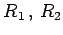
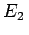
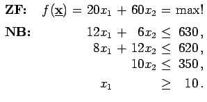
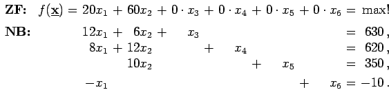

Inhalt Index DeskTop Bronstein

 Optimierung Lineare Optimierung Problemstellung und geometrische Darstellung Beispiele und graphische Lösungen
Optimierung Lineare Optimierung Problemstellung und geometrische Darstellung Beispiele und graphische Lösungen


Für die Herstellung zweier Produkte E1 und E2 werden die Ausgangsstoffe  und R3 benötigt. Aus dem folgenden Schema sind die für die Erzeugung einer Produkteinheit (PE) der Produkte E1 und E2 erforderlichen Mengeneinheiten (ME) der Ausgangsstoffe sowie die verfügbaren Materialkontingente zu entnehmen. Der Verkauf einer Produkteinheit von E1 bzw. E2 erbringt einen Gewinn von 20 bzw. 60 Gewinneinheiten (GE).
Gesucht ist ein Produktionsprogramm, das maximalen Gewinn sichert, wobei mindestens 10 Produktionseinheiten von E1 erzeugt werden sollen.
| ME R1 pro PE | ME R2 pro PE | ME R3 pro PE | |
| E1 | 12 | 8 | 0 |
| E2 | 6 | 12 | 10 |
| Kontingent | 630 | 620 | 350 |
Bezeichnet man mit x1 bzw. x2 die Anzahl der Produkteinheiten von E1 bzw. , dann ergibt sich die folgende Aufgabe:
|  |
|  |